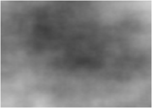
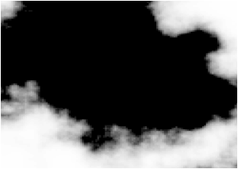
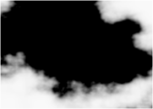
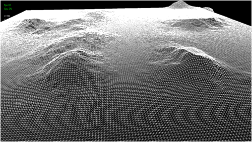

Tutorial 2: Height Maps

This tutorial will cover how to implement height maps for representing terrain in 3D using DirectX 11 and C++. The code in this tutorial will be based on the previous terrain tutorial.
Height maps are just that, a mapping of height points stored in a file. The most common method of storing a height map is using a bitmap, raw, text, or binary file and storing the height of the terrain using a value from 0-255 with 0 being the lowest height of the terrain and 255 being the maximum height. Grey scale bitmaps and .raw files lend themselves well to this since you can use the intensity of the grey color to represent the height. This also makes them very easy to edit and manipulate with drawing programs or mathematical algorithms.
My favorite method of generating height maps is using the Perlin Noise algorithm and then saving that output to a bitmap file. You can write your own Perlin Noise generator or use ones that already exist.
I usually use my Perlin Noise generator to create numerous height maps until I see one that fits what I'm looking for. For example I just generated the following:

After that I usually run an exponent algorithm on the Perlin Noise image to produce a flat surface/hills style terrain such as this:

Finally I run an smoothing process to average neighbor pixels to create a less blocky version of the terrain such as this:

I then save that image into the bitmap format and use that for my terrain height map. The bitmap is loaded into the terrain engine and I use each point on the map to make a terrain mesh that will be represented with triangles.
For this tutorial we will just replace the last tutorial's grid code with the new height map code. The code will be changed to read in the height map and then elevate each point on the grid so that is matches the height map elevations. To do this we only need to change the TerrainClass code.
Terrainclass.h
////////////////////////////////////////////////////////////////////////////////
// Filename: terrainclass.h
////////////////////////////////////////////////////////////////////////////////
#ifndef _TERRAINCLASS_H_
#define _TERRAINCLASS_H_
//////////////
// INCLUDES //
//////////////
#include <d3d11.h>
#include <d3dx10math.h>
#include <stdio.h>
////////////////////////////////////////////////////////////////////////////////
// Class name: TerrainClass
////////////////////////////////////////////////////////////////////////////////
class TerrainClass
{
private:
struct VertexType
{
D3DXVECTOR3 position;
D3DXVECTOR4 color;
};
The first major change to the TerrainClass is this new struct to hold the height map data. Each point on the height map will have an x, y, and z coordinate. This structure is setup to handle that.
struct HeightMapType
{
float x, y, z;
};
public:
TerrainClass();
TerrainClass(const TerrainClass&);
~TerrainClass();
The next change is that the Initialize function now takes a second input parameter which is the file name of the height map.
bool Initialize(ID3D11Device*, char*); void Shutdown(); void Render(ID3D11DeviceContext*); int GetIndexCount(); private:
Also there are three new functions to handle loading, normalizing, and unloading the height map data.
bool LoadHeightMap(char*); void NormalizeHeightMap(); void ShutdownHeightMap(); bool InitializeBuffers(ID3D11Device*); void ShutdownBuffers(); void RenderBuffers(ID3D11DeviceContext*); private: int m_terrainWidth, m_terrainHeight; int m_vertexCount, m_indexCount; ID3D11Buffer *m_vertexBuffer, *m_indexBuffer;
And finally we have a new pointer for the height map array. This will be used to store the data read in from the bitmap height map file.
HeightMapType* m_heightMap; }; #endif
Terrainclass.cpp
////////////////////////////////////////////////////////////////////////////////
// Filename: terrainclass.cpp
////////////////////////////////////////////////////////////////////////////////
#include "terrainclass.h"
TerrainClass::TerrainClass()
{
m_vertexBuffer = 0;
m_indexBuffer = 0;
Initialize the new height map array pointer to null in the class constructor.
m_heightMap = 0;
}
TerrainClass::TerrainClass(const TerrainClass& other)
{
}
TerrainClass::~TerrainClass()
{
}
bool TerrainClass::Initialize(ID3D11Device* device, char* heightMapFilename)
{
bool result;
The Initialize function has changed a bit. It now starts by loading the height map file into the height map array and then normalizing it after. After that is complete it calls InitializeBuffers function which now works off the height map array to build the buffers needed for rendering the terrain.
// Load in the height map for the terrain.
result = LoadHeightMap(heightMapFilename);
if(!result)
{
return false;
}
// Normalize the height of the height map.
NormalizeHeightMap();
// Initialize the vertex and index buffer that hold the geometry for the terrain.
result = InitializeBuffers(device);
if(!result)
{
return false;
}
return true;
}
void TerrainClass::Shutdown()
{
// Release the vertex and index buffer.
ShutdownBuffers();
The Shutdown function now calls the ShutdownHeightMap function to release the height map array that was built during the terrain initialization.
// Release the height map data.
ShutdownHeightMap();
return;
}
void TerrainClass::Render(ID3D11DeviceContext* deviceContext)
{
// Put the vertex and index buffers on the graphics pipeline to prepare them for drawing.
RenderBuffers(deviceContext);
return;
}
int TerrainClass::GetIndexCount()
{
return m_indexCount;
}
LoadHeightMap is a new function that loads the bitmap file containing the height map into the new height map array. If you want to use a more optimal file structure like .raw you can change the code to load that in instead. For simplicity however I used the bitmap format since it is very common and most people have worked with it before. Note that bitmap contains red, green, and blue colors. But since this is a grey scale image you can read either the red, green, or blue color as they will all be the same grey value and you only need one of them.
bool TerrainClass::LoadHeightMap(char* filename)
{
FILE* filePtr;
int error;
unsigned int count;
BITMAPFILEHEADER bitmapFileHeader;
BITMAPINFOHEADER bitmapInfoHeader;
int imageSize, i, j, k, index;
unsigned char* bitmapImage;
unsigned char height;
Begin by opening the file and then read it into a unsigned char array. Close the file after we are finished reading the data from it.
// Open the height map file in binary.
error = fopen_s(&filePtr, filename, "rb");
if(error != 0)
{
return false;
}
// Read in the file header.
count = fread(&bitmapFileHeader, sizeof(BITMAPFILEHEADER), 1, filePtr);
if(count != 1)
{
return false;
}
// Read in the bitmap info header.
count = fread(&bitmapInfoHeader, sizeof(BITMAPINFOHEADER), 1, filePtr);
if(count != 1)
{
return false;
}
Store the size of the terrain so we can use these values for building the vertex and index buffers as well as rendering the terrain.
// Save the dimensions of the terrain.
m_terrainWidth = bitmapInfoHeader.biWidth;
m_terrainHeight = bitmapInfoHeader.biHeight;
// Calculate the size of the bitmap image data.
imageSize = m_terrainWidth * m_terrainHeight * 3;
// Allocate memory for the bitmap image data.
bitmapImage = new unsigned char[imageSize];
if(!bitmapImage)
{
return false;
}
// Move to the beginning of the bitmap data.
fseek(filePtr, bitmapFileHeader.bfOffBits, SEEK_SET);
// Read in the bitmap image data.
count = fread(bitmapImage, 1, imageSize, filePtr);
if(count != imageSize)
{
return false;
}
// Close the file.
error = fclose(filePtr);
if(error != 0)
{
return false;
}
Now that the bitmap has been read in create the two dimensional height map array and read the buffer into it. Note that during the for loop I use the two loop variables (i and j) to be the X (width) and Z (depth) of the terrain. And then I use the bitmap value to be the Y (height) of the terrain. You will also see I increment the index into the bitmap (k) by three since we only need one of the color values (red, green, or blue) to be used as the grey scale value.
// Create the structure to hold the height map data.
m_heightMap = new HeightMapType[m_terrainWidth * m_terrainHeight];
if(!m_heightMap)
{
return false;
}
// Initialize the position in the image data buffer.
k=0;
// Read the image data into the height map.
for(j=0; j<m_terrainHeight; j++)
{
for(i=0; i<m_terrainWidth; i++)
{
height = bitmapImage[k];
index = (m_terrainHeight * j) + i;
m_heightMap[index].x = (float)i;
m_heightMap[index].y = (float)height;
m_heightMap[index].z = (float)j;
k+=3;
}
}
Now that we have stored the height map data for the terrain in our own array we can release the bitmap array.
// Release the bitmap image data. delete [] bitmapImage; bitmapImage = 0; return true; }
The next new function is NormalizeHeightMap. All it does is it goes through the terrain and divides each height value by 15 so that the terrain doesn't look too spikey. Generally its better just to do this work on the height map before loading it in.
void TerrainClass::NormalizeHeightMap()
{
int i, j;
for(j=0; j<m_terrainHeight; j++)
{
for(i=0; i<m_terrainWidth; i++)
{
m_heightMap[(m_terrainHeight * j) + i].y /= 15.0f;
}
}
return;
}
The ShutdownHeightMap function releases the two dimensional height map array.
void TerrainClass::ShutdownHeightMap()
{
if(m_heightMap)
{
delete [] m_heightMap;
m_heightMap = 0;
}
return;
}
InitializeBuffers has changed and now uses the height map array to construct the vertex and index buffer that will be used to render the terrain.
bool TerrainClass::InitializeBuffers(ID3D11Device* device)
{
VertexType* vertices;
unsigned long* indices;
int index, i, j;
D3D11_BUFFER_DESC vertexBufferDesc, indexBufferDesc;
D3D11_SUBRESOURCE_DATA vertexData, indexData;
HRESULT result;
int index1, index2, index3, index4;
First determine the number of vertices and indices needed to construct the terrain with the given dimensions of the height map. Also we will construct triangles instead of quads out of the terrain so we will need twelve vertices to make two triangles per quad with each triangle using line lists.
// Calculate the number of vertices in the terrain mesh. m_vertexCount = (m_terrainWidth - 1) * (m_terrainHeight - 1) * 12; // Set the index count to the same as the vertex count. m_indexCount = m_vertexCount;
Then create the vertex and index array to store the terrain mesh.
// Create the vertex array.
vertices = new VertexType[m_vertexCount];
if(!vertices)
{
return false;
}
// Create the index array.
indices = new unsigned long[m_indexCount];
if(!indices)
{
return false;
}
Now loop through all the points in the height map array and create triangles made of of lines. Two vertices per line, three lines per triangle, and two triangles per quad/square.
// Initialize the index to the vertex buffer.
index = 0;
// Load the vertex and index array with the terrain data.
for(j=0; j<(m_terrainHeight-1); j++)
{
for(i=0; i<(m_terrainWidth-1); i++)
{
index1 = (m_terrainHeight * j) + i; // Bottom left.
index2 = (m_terrainHeight * j) + (i+1); // Bottom right.
index3 = (m_terrainHeight * (j+1)) + i; // Upper left.
index4 = (m_terrainHeight * (j+1)) + (i+1); // Upper right.
// Upper left.
vertices[index].position = D3DXVECTOR3(m_heightMap[index3].x, m_heightMap[index3].y, m_heightMap[index3].z);
vertices[index].color = D3DXVECTOR4(1.0f, 1.0f, 1.0f, 1.0f);
indices[index] = index;
index++;
// Upper right.
vertices[index].position = D3DXVECTOR3(m_heightMap[index4].x, m_heightMap[index4].y, m_heightMap[index4].z);
vertices[index].color = D3DXVECTOR4(1.0f, 1.0f, 1.0f, 1.0f);
indices[index] = index;
index++;
// Upper right.
vertices[index].position = D3DXVECTOR3(m_heightMap[index4].x, m_heightMap[index4].y, m_heightMap[index4].z);
vertices[index].color = D3DXVECTOR4(1.0f, 1.0f, 1.0f, 1.0f);
indices[index] = index;
index++;
// Bottom left.
vertices[index].position = D3DXVECTOR3(m_heightMap[index1].x, m_heightMap[index1].y, m_heightMap[index1].z);
vertices[index].color = D3DXVECTOR4(1.0f, 1.0f, 1.0f, 1.0f);
indices[index] = index;
index++;
// Bottom left.
vertices[index].position = D3DXVECTOR3(m_heightMap[index1].x, m_heightMap[index1].y, m_heightMap[index1].z);
vertices[index].color = D3DXVECTOR4(1.0f, 1.0f, 1.0f, 1.0f);
indices[index] = index;
index++;
// Upper left.
vertices[index].position = D3DXVECTOR3(m_heightMap[index3].x, m_heightMap[index3].y, m_heightMap[index3].z);
vertices[index].color = D3DXVECTOR4(1.0f, 1.0f, 1.0f, 1.0f);
indices[index] = index;
index++;
// Bottom left.
vertices[index].position = D3DXVECTOR3(m_heightMap[index1].x, m_heightMap[index1].y, m_heightMap[index1].z);
vertices[index].color = D3DXVECTOR4(1.0f, 1.0f, 1.0f, 1.0f);
indices[index] = index;
index++;
// Upper right.
vertices[index].position = D3DXVECTOR3(m_heightMap[index4].x, m_heightMap[index4].y, m_heightMap[index4].z);
vertices[index].color = D3DXVECTOR4(1.0f, 1.0f, 1.0f, 1.0f);
indices[index] = index;
index++;
// Upper right.
vertices[index].position = D3DXVECTOR3(m_heightMap[index4].x, m_heightMap[index4].y, m_heightMap[index4].z);
vertices[index].color = D3DXVECTOR4(1.0f, 1.0f, 1.0f, 1.0f);
indices[index] = index;
index++;
// Bottom right.
vertices[index].position = D3DXVECTOR3(m_heightMap[index2].x, m_heightMap[index2].y, m_heightMap[index2].z);
vertices[index].color = D3DXVECTOR4(1.0f, 1.0f, 1.0f, 1.0f);
indices[index] = index;
index++;
// Bottom right.
vertices[index].position = D3DXVECTOR3(m_heightMap[index2].x, m_heightMap[index2].y, m_heightMap[index2].z);
vertices[index].color = D3DXVECTOR4(1.0f, 1.0f, 1.0f, 1.0f);
indices[index] = index;
index++;
// Bottom left.
vertices[index].position = D3DXVECTOR3(m_heightMap[index1].x, m_heightMap[index1].y, m_heightMap[index1].z);
vertices[index].color = D3DXVECTOR4(1.0f, 1.0f, 1.0f, 1.0f);
indices[index] = index;
index++;
}
}
Now that the arrays are setup you can create the vertex and index buffers that will be used to render the terrain.
// Set up the description of the static vertex buffer.
vertexBufferDesc.Usage = D3D11_USAGE_DEFAULT;
vertexBufferDesc.ByteWidth = sizeof(VertexType) * m_vertexCount;
vertexBufferDesc.BindFlags = D3D11_BIND_VERTEX_BUFFER;
vertexBufferDesc.CPUAccessFlags = 0;
vertexBufferDesc.MiscFlags = 0;
vertexBufferDesc.StructureByteStride = 0;
// Give the subresource structure a pointer to the vertex data.
vertexData.pSysMem = vertices;
vertexData.SysMemPitch = 0;
vertexData.SysMemSlicePitch = 0;
// Now create the vertex buffer.
result = device->CreateBuffer(&vertexBufferDesc, &vertexData, &m_vertexBuffer);
if(FAILED(result))
{
return false;
}
// Set up the description of the static index buffer.
indexBufferDesc.Usage = D3D11_USAGE_DEFAULT;
indexBufferDesc.ByteWidth = sizeof(unsigned long) * m_indexCount;
indexBufferDesc.BindFlags = D3D11_BIND_INDEX_BUFFER;
indexBufferDesc.CPUAccessFlags = 0;
indexBufferDesc.MiscFlags = 0;
indexBufferDesc.StructureByteStride = 0;
// Give the subresource structure a pointer to the index data.
indexData.pSysMem = indices;
indexData.SysMemPitch = 0;
indexData.SysMemSlicePitch = 0;
// Create the index buffer.
result = device->CreateBuffer(&indexBufferDesc, &indexData, &m_indexBuffer);
if(FAILED(result))
{
return false;
}
// Release the arrays now that the buffers have been created and loaded.
delete [] vertices;
vertices = 0;
delete [] indices;
indices = 0;
return true;
}
void TerrainClass::ShutdownBuffers()
{
// Release the index buffer.
if(m_indexBuffer)
{
m_indexBuffer->Release();
m_indexBuffer = 0;
}
// Release the vertex buffer.
if(m_vertexBuffer)
{
m_vertexBuffer->Release();
m_vertexBuffer = 0;
}
return;
}
void TerrainClass::RenderBuffers(ID3D11DeviceContext* deviceContext)
{
unsigned int stride;
unsigned int offset;
// Set vertex buffer stride and offset.
stride = sizeof(VertexType);
offset = 0;
// Set the vertex buffer to active in the input assembler so it can be rendered.
deviceContext->IASetVertexBuffers(0, 1, &m_vertexBuffer, &stride, &offset);
// Set the index buffer to active in the input assembler so it can be rendered.
deviceContext->IASetIndexBuffer(m_indexBuffer, DXGI_FORMAT_R32_UINT, 0);
// Set the type of primitive that should be rendered from this vertex buffer, in this case a line list.
deviceContext->IASetPrimitiveTopology(D3D11_PRIMITIVE_TOPOLOGY_LINELIST);
return;
}
Applicationclass.h
The header for the ApplicationClass has not changed for this tutorial.
////////////////////////////////////////////////////////////////////////////////
// Filename: applicationclass.h
////////////////////////////////////////////////////////////////////////////////
#ifndef _APPLICATIONCLASS_H_
#define _APPLICATIONCLASS_H_
/////////////
// GLOBALS //
/////////////
const bool FULL_SCREEN = true;
const bool VSYNC_ENABLED = true;
const float SCREEN_DEPTH = 1000.0f;
const float SCREEN_NEAR = 0.1f;
///////////////////////
// MY CLASS INCLUDES //
///////////////////////
#include "inputclass.h"
#include "d3dclass.h"
#include "cameraclass.h"
#include "terrainclass.h"
#include "colorshaderclass.h"
#include "timerclass.h"
#include "positionclass.h"
#include "fpsclass.h"
#include "cpuclass.h"
#include "fontshaderclass.h"
#include "textclass.h"
////////////////////////////////////////////////////////////////////////////////
// Class name: ApplicationClass
////////////////////////////////////////////////////////////////////////////////
class ApplicationClass
{
public:
ApplicationClass();
ApplicationClass(const ApplicationClass&);
~ApplicationClass();
bool Initialize(HINSTANCE, HWND, int, int);
void Shutdown();
bool Frame();
private:
bool HandleInput(float);
bool RenderGraphics();
private:
InputClass* m_Input;
D3DClass* m_Direct3D;
CameraClass* m_Camera;
TerrainClass* m_Terrain;
ColorShaderClass* m_ColorShader;
TimerClass* m_Timer;
PositionClass* m_Position;
FpsClass* m_Fps;
CpuClass* m_Cpu;
FontShaderClass* m_FontShader;
TextClass* m_Text;
};
#endif
Applicationclass.cpp
////////////////////////////////////////////////////////////////////////////////
// Filename: applicationclass.cpp
////////////////////////////////////////////////////////////////////////////////
#include "applicationclass.h"
ApplicationClass::ApplicationClass()
{
m_Input = 0;
m_Direct3D = 0;
m_Camera = 0;
m_Terrain = 0;
m_ColorShader = 0;
m_Timer = 0;
m_Position = 0;
m_Fps = 0;
m_Cpu = 0;
m_FontShader = 0;
m_Text = 0;
}
ApplicationClass::ApplicationClass(const ApplicationClass& other)
{
}
ApplicationClass::~ApplicationClass()
{
}
bool ApplicationClass::Initialize(HINSTANCE hinstance, HWND hwnd, int screenWidth, int screenHeight)
{
bool result;
float cameraX, cameraY, cameraZ;
D3DXMATRIX baseViewMatrix;
char videoCard[128];
int videoMemory;
// Create the input object. The input object will be used to handle reading the keyboard and mouse input from the user.
m_Input = new InputClass;
if(!m_Input)
{
return false;
}
// Initialize the input object.
result = m_Input->Initialize(hinstance, hwnd, screenWidth, screenHeight);
if(!result)
{
MessageBox(hwnd, L"Could not initialize the input object.", L"Error", MB_OK);
return false;
}
// Create the Direct3D object.
m_Direct3D = new D3DClass;
if(!m_Direct3D)
{
return false;
}
// Initialize the Direct3D object.
result = m_Direct3D->Initialize(screenWidth, screenHeight, VSYNC_ENABLED, hwnd, FULL_SCREEN, SCREEN_DEPTH, SCREEN_NEAR);
if(!result)
{
MessageBox(hwnd, L"Could not initialize DirectX 11.", L"Error", MB_OK);
return false;
}
// Create the camera object.
m_Camera = new CameraClass;
if(!m_Camera)
{
return false;
}
// Initialize a base view matrix with the camera for 2D user interface rendering.
m_Camera->SetPosition(0.0f, 0.0f, -1.0f);
m_Camera->Render();
m_Camera->GetViewMatrix(baseViewMatrix);
// Set the initial position of the camera.
cameraX = 50.0f;
cameraY = 2.0f;
cameraZ = -7.0f;
m_Camera->SetPosition(cameraX, cameraY, cameraZ);
// Create the terrain object.
m_Terrain = new TerrainClass;
if(!m_Terrain)
{
return false;
}
The only change to the ApplicationClass source file is that the terrain initialize function now requires the file name of the bitmap that is being used to represent the terrain height map.
// Initialize the terrain object.
result = m_Terrain->Initialize(m_Direct3D->GetDevice(), "../Engine/data/heightmap01.bmp");
if(!result)
{
MessageBox(hwnd, L"Could not initialize the terrain object.", L"Error", MB_OK);
return false;
}
// Create the color shader object.
m_ColorShader = new ColorShaderClass;
if(!m_ColorShader)
{
return false;
}
// Initialize the color shader object.
result = m_ColorShader->Initialize(m_Direct3D->GetDevice(), hwnd);
if(!result)
{
MessageBox(hwnd, L"Could not initialize the color shader object.", L"Error", MB_OK);
return false;
}
// Create the timer object.
m_Timer = new TimerClass;
if(!m_Timer)
{
return false;
}
// Initialize the timer object.
result = m_Timer->Initialize();
if(!result)
{
MessageBox(hwnd, L"Could not initialize the timer object.", L"Error", MB_OK);
return false;
}
// Create the position object.
m_Position = new PositionClass;
if(!m_Position)
{
return false;
}
// Set the initial position of the viewer to the same as the initial camera position.
m_Position->SetPosition(cameraX, cameraY, cameraZ);
// Create the fps object.
m_Fps = new FpsClass;
if(!m_Fps)
{
return false;
}
// Initialize the fps object.
m_Fps->Initialize();
// Create the cpu object.
m_Cpu = new CpuClass;
if(!m_Cpu)
{
return false;
}
// Initialize the cpu object.
m_Cpu->Initialize();
// Create the font shader object.
m_FontShader = new FontShaderClass;
if(!m_FontShader)
{
return false;
}
// Initialize the font shader object.
result = m_FontShader->Initialize(m_Direct3D->GetDevice(), hwnd);
if(!result)
{
MessageBox(hwnd, L"Could not initialize the font shader object.", L"Error", MB_OK);
return false;
}
// Create the text object.
m_Text = new TextClass;
if(!m_Text)
{
return false;
}
// Initialize the text object.
result = m_Text->Initialize(m_Direct3D->GetDevice(), m_Direct3D->GetDeviceContext(), hwnd, screenWidth, screenHeight, baseViewMatrix);
if(!result)
{
MessageBox(hwnd, L"Could not initialize the text object.", L"Error", MB_OK);
return false;
}
// Retrieve the video card information.
m_Direct3D->GetVideoCardInfo(videoCard, videoMemory);
// Set the video card information in the text object.
result = m_Text->SetVideoCardInfo(videoCard, videoMemory, m_Direct3D->GetDeviceContext());
if(!result)
{
MessageBox(hwnd, L"Could not set video card info in the text object.", L"Error", MB_OK);
return false;
}
return true;
}
void ApplicationClass::Shutdown()
{
// Release the text object.
if(m_Text)
{
m_Text->Shutdown();
delete m_Text;
m_Text = 0;
}
// Release the font shader object.
if(m_FontShader)
{
m_FontShader->Shutdown();
delete m_FontShader;
m_FontShader = 0;
}
// Release the cpu object.
if(m_Cpu)
{
m_Cpu->Shutdown();
delete m_Cpu;
m_Cpu = 0;
}
// Release the fps object.
if(m_Fps)
{
delete m_Fps;
m_Fps = 0;
}
// Release the position object.
if(m_Position)
{
delete m_Position;
m_Position = 0;
}
// Release the timer object.
if(m_Timer)
{
delete m_Timer;
m_Timer = 0;
}
// Release the color shader object.
if(m_ColorShader)
{
m_ColorShader->Shutdown();
delete m_ColorShader;
m_ColorShader = 0;
}
// Release the terrain object.
if(m_Terrain)
{
m_Terrain->Shutdown();
delete m_Terrain;
m_Terrain = 0;
}
// Release the camera object.
if(m_Camera)
{
delete m_Camera;
m_Camera = 0;
}
// Release the Direct3D object.
if(m_Direct3D)
{
m_Direct3D->Shutdown();
delete m_Direct3D;
m_Direct3D = 0;
}
// Release the input object.
if(m_Input)
{
m_Input->Shutdown();
delete m_Input;
m_Input = 0;
}
return;
}
bool ApplicationClass::Frame()
{
bool result;
// Read the user input.
result = m_Input->Frame();
if(!result)
{
return false;
}
// Check if the user pressed escape and wants to exit the application.
if(m_Input->IsEscapePressed() == true)
{
return false;
}
// Update the system stats.
m_Timer->Frame();
m_Fps->Frame();
m_Cpu->Frame();
// Update the FPS value in the text object.
result = m_Text->SetFps(m_Fps->GetFps(), m_Direct3D->GetDeviceContext());
if(!result)
{
return false;
}
// Update the CPU usage value in the text object.
result = m_Text->SetCpu(m_Cpu->GetCpuPercentage(), m_Direct3D->GetDeviceContext());
if(!result)
{
return false;
}
// Do the frame input processing.
result = HandleInput(m_Timer->GetTime());
if(!result)
{
return false;
}
// Render the graphics.
result = RenderGraphics();
if(!result)
{
return false;
}
return result;
}
bool ApplicationClass::HandleInput(float frameTime)
{
bool keyDown, result;
float posX, posY, posZ, rotX, rotY, rotZ;
// Set the frame time for calculating the updated position.
m_Position->SetFrameTime(frameTime);
// Handle the input.
keyDown = m_Input->IsLeftPressed();
m_Position->TurnLeft(keyDown);
keyDown = m_Input->IsRightPressed();
m_Position->TurnRight(keyDown);
keyDown = m_Input->IsUpPressed();
m_Position->MoveForward(keyDown);
keyDown = m_Input->IsDownPressed();
m_Position->MoveBackward(keyDown);
keyDown = m_Input->IsAPressed();
m_Position->MoveUpward(keyDown);
keyDown = m_Input->IsZPressed();
m_Position->MoveDownward(keyDown);
keyDown = m_Input->IsPgUpPressed();
m_Position->LookUpward(keyDown);
keyDown = m_Input->IsPgDownPressed();
m_Position->LookDownward(keyDown);
// Get the view point position/rotation.
m_Position->GetPosition(posX, posY, posZ);
m_Position->GetRotation(rotX, rotY, rotZ);
// Set the position of the camera.
m_Camera->SetPosition(posX, posY, posZ);
m_Camera->SetRotation(rotX, rotY, rotZ);
// Update the position values in the text object.
result = m_Text->SetCameraPosition(posX, posY, posZ, m_Direct3D->GetDeviceContext());
if(!result)
{
return false;
}
// Update the rotation values in the text object.
result = m_Text->SetCameraRotation(rotX, rotY, rotZ, m_Direct3D->GetDeviceContext());
if(!result)
{
return false;
}
return true;
}
bool ApplicationClass::RenderGraphics()
{
D3DXMATRIX worldMatrix, viewMatrix, projectionMatrix, orthoMatrix;
bool result;
// Clear the scene.
m_Direct3D->BeginScene(0.0f, 0.0f, 0.0f, 1.0f);
// Generate the view matrix based on the camera's position.
m_Camera->Render();
// Get the world, view, projection, and ortho matrices from the camera and Direct3D objects.
m_Direct3D->GetWorldMatrix(worldMatrix);
m_Camera->GetViewMatrix(viewMatrix);
m_Direct3D->GetProjectionMatrix(projectionMatrix);
m_Direct3D->GetOrthoMatrix(orthoMatrix);
// Render the terrain buffers.
m_Terrain->Render(m_Direct3D->GetDeviceContext());
// Render the model using the color shader.
result = m_ColorShader->Render(m_Direct3D->GetDeviceContext(), m_Terrain->GetIndexCount(), worldMatrix, viewMatrix, projectionMatrix);
if(!result)
{
return false;
}
// Turn off the Z buffer to begin all 2D rendering.
m_Direct3D->TurnZBufferOff();
// Turn on the alpha blending before rendering the text.
m_Direct3D->TurnOnAlphaBlending();
// Render the text user interface elements.
result = m_Text->Render(m_Direct3D->GetDeviceContext(), m_FontShader, worldMatrix, orthoMatrix);
if(!result)
{
return false;
}
// Turn off alpha blending after rendering the text.
m_Direct3D->TurnOffAlphaBlending();
// Turn the Z buffer back on now that all 2D rendering has completed.
m_Direct3D->TurnZBufferOn();
// Present the rendered scene to the screen.
m_Direct3D->EndScene();
return true;
}
Summary
We now have the ability to load in height maps and move around the height map based terrain in 3D.

To Do Exercises
1. Recompile the code and use the input keys to move around the terrain.
2. Create you own grey scale bitmap and load it into the terrain engine to see that height map in 3D.
3. Change the LoadHeightMap function to load in the .raw format.
Source Code
Visual Studio 2010 Project: tertut02.zip
Source Only: tersrc02.zip
Executable Only: terexe02.zip